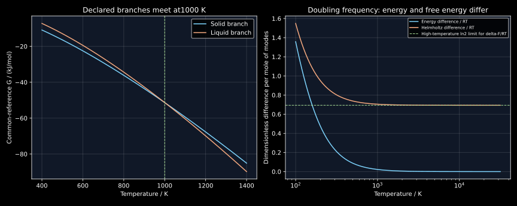

10. Lattice stability, caloric integration and microscopic mixing energies
A thermodynamic database must compare alternative phases even where some of them cannot exist as stable bulk materials. The comparison requires common reference conventions, heat-capacity integration, latent heats and carefully defined extrapolations. At the microscopic level, a difference in preferred neighbors provides one contribution to mixing energy; changes in vibrations and volume can supply others. A useful model states which contributions it keeps and tests which predictions survive a change of reference.
The complete local transcript of lesson 18 was read sequentially. Its sequence moves from zero-temperature unary properties to lattice stability and reference states, then to bond, vibrational and pressure–volume contributions to mixing. This chapter distinguishes quantum ground-state motion from entropy, keeps one common phase-energy reference, corrects the bar–atmosphere conversion, and derives the limits of the bond-stiffness explanation. All caloric and oscillator curves are declared constructions. A small published lattice-stability data extract is separately attributed; no electronic-structure calculation is reproduced.
10.1 Zero entropy does not mean motionless quantum nuclei L 18 · 03:50
A static lattice model places atoms at an energy-minimizing configuration and neglects thermal excitations. Its energy may be approximated by a sum of pair-bond energies, provided the model is actually pairwise additive. Real metallic bonding often requires many-body or electronic descriptions. A density-functional electronic ground-state energy, a fitted pair potential and a measured finite-temperature internal energy therefore should not be treated as interchangeable quantities.
The statement in the recording that atoms have no vibration or kinetic energy at absolute zero is a classical simplification. A quantum harmonic mode has levels $E_j=\hbar\omega(j+1/2)$. Its ground state has energy $\hbar\omega/2$ and nonzero position and momentum fluctuations. For a harmonic oscillator the average kinetic and potential contributions each supply half of this ground-state energy. Nuclear zero-point motion can therefore affect structural energy differences even though the mode has zero entropy in its unique ground state.
The distinction is transparent in probabilities. If only one accessible ground state is populated, $S=-k_B\sum_jp_j\ln p_j=0$. The value of that state's energy need not be zero. A ground-state degeneracy $g$ would instead give $k_B\ln g$ for an equally weighted ground-state ensemble. A finite degeneracy contributes zero entropy per particle in the thermodynamic limit when $\ln g/N\to0$, whereas an extensive degeneracy can behave differently. Frozen disorder and a nonequilibrium cooling history also require care. The perfect-crystal third-law reference is not a claim that every material prepared in a laboratory reaches a unique equilibrium state at zero temperature.
Choosing an enthalpy origin is a separate operation. One can subtract a common constant from every structural state's enthalpy for a fixed amount of an element without changing differences between those states. One cannot independently set every phase's enthalpy to zero at the same temperature and retain the physical transformation enthalpies. Zero-point energy, cohesive energy and a reference zero answer different questions.
10.2 Integrate a branch and account for every transition L 18 · 09:55
At fixed pressure on a specified equilibrium or constrained phase branch, $C_p=(\partial H/\partial T)_p$ and $C_p/T=(\partial S/\partial T)_p$. Hence, between temperatures on that same branch,
The enthalpy constant and entropy constant are both needed. Assigning $H(T_r)=0$ does not imply $S(T_r)=0$. For a perfect crystal with the chosen third-law ground state, one may obtain entropy by integrating from zero, provided the low-temperature heat capacity and every transition are correctly represented. A temperature-independent positive heat capacity extrapolated all the way to zero would give a logarithmically divergent entropy; that is a failure of the extrapolation, not a failure of the third law.
A prescribed model illustrates an integrable low-temperature limit. At 100 kPa, let the solid have $C_p=\alpha T^3$ below $T_j=100$ K with $\alpha=3\times10^{-5}$ J/(mol K⁴), and $C_p=30$ J/(mol K) from 100 K upward over the stated model range. This joins continuously at 100 K. Set $H_s(0)=S_s(0)=0$. The low-temperature integrals give $H_s(T)=\alpha T^4/4$ and $S_s(T)=\alpha T^3/3$. Above the join,
The logarithm uses a temperature ratio, and the coefficient in the enthalpy expression has the corresponding heat-capacity units. At 1000 K, the model gives $H_s=27750$ J/mol and $S_s=79.077552790$ J/(mol K). The cubic low-temperature branch is an illustrative acoustic-lattice form; it omits electronic, magnetic and other contributions and is not fitted to an identified element.
Now declare a first-order melting transition at $T_m=1000$ K with latent enthalpy $L=10000$ J/mol and a liquid heat capacity 40 J/(mol K). At equilibrium coexistence, $g_l=g_s$, so $\Delta s_m=L/T_m=10$ J/(mol K). For $T>T_m$, the stable heating path has
At 1200 K, $H_l=45750$ J/mol, $S_l=96.370415062$ J/(mol K), and $g_l=H_l-TS_l=-69894.498074$ J/mol. Omitting the latent heat would miss 10000 J/mol in enthalpy; omitting its entropy counterpart would destroy equality of the phase Gibbs energies at melting. The jumps are linked, not two independent fitting choices.
10.3 Lattice stability is a difference between specified branches L 18 · 15:59
For a pure substance at fixed temperature and pressure, compare molar Gibbs energies on a common reference. The stable bulk state is the admissible state with lowest molar energy. Equality of two branches identifies a candidate coexistence point; they must also lie no higher than all other admissible branches. Merely crossing two high-energy curves does not make them stable against a third lower phase.
Write the liquid–solid lattice difference as $\Delta g_{s\to l}=g_l-g_s$. Positive difference means the selected solid lies lower than the selected liquid; negative difference favors the liquid. The arrow fixes the sign. Values for an unstable or metastable structural branch are model descriptions under a constraint or extrapolation, not claims that a macroscopic specimen of that branch can be held at equilibrium for a calorimetric measurement.
For the declared model, retain the solid heat-capacity branch above melting and the liquid branch below melting only as specified extrapolations over 298–1400 K. The difference in heat capacities is 10 J/(mol K). Integration from coexistence gives
The model gives $\Delta g(800)=1785.148411$ J/mol, zero at 1000 K and $\Delta g(1200)=-2187.858682$ J/mol. Its stable envelope switches from solid to liquid at the crossing. The branch slopes satisfy $g_T=-s$ and their curvature satisfies $g_{TT}=-C_p/T$. The difference has derivative $-\Delta s$, and its slope at melting is $-10$ J/(mol K).
The recording also plots one structural phase as a zero horizontal baseline at every temperature. That plot subtracts the reference phase's temperature-dependent Gibbs energy: $\tilde g_\phi(T)=g_\phi(T)-g_r(T)$. It is a lattice-difference plot. Its derivative is $-s_\phi+s_r$, not $-s_\phi$. Treating the horizontal reference as a phase with physically zero entropy would confuse an algebraic subtraction with a material property.
For several phases at fixed overall composition, a common elemental reference remains equally harmless. If every admissible state contains the same total amount of each element, adding $\sum_i n_i c_i(T,p)$ to every total Gibbs energy adds the same number to every candidate. Comparisons and equilibrium phase fractions are unchanged. A phase-specific adjustment is different: it changes physical differences and can move phase boundaries.

10.4 Reference state, standard state and pressure are separate conventions L 18 · 27:51
An energy reference specifies a subtraction. In a Standard Element Reference convention, an element's selected stable reference phase at 298.15 K provides an enthalpy origin; other phases retain their enthalpy differences from that origin. A tabulated function such as $g_\phi(T)-h_{\rm SER}(298.15)$ is not generally zero at 298.15 K, since it still includes $-Ts$ and any structural enthalpy offset. The entropy reference and the enthalpy reference must not be silently interchanged.
A standard state specifies physical or hypothetical conditions used to define thermodynamic quantities and, later, activities. It need not always mean the phase that happens to be stable: a model can use a specified metastable pure phase or a hypothetical ideal-gas standard. The introductory stable-unary examples in the recording are useful but do not exhaust the general concept. Always state the phase, temperature, pressure convention and amount basis, and distinguish standard quantities from arbitrary zero choices.
The pressure conversion is exact: one bar is 100000 Pa, while one standard atmosphere is 101325 Pa. Thus 100 kPa is not one atmosphere. IUPAC's standard-pressure entry specifies the recommended $10^5$ Pa convention and distinguishes the older atmosphere value. Its complete short entry was verified through the indexed primary source; direct retrieval returned HTTP 403 during production. Historical data using one atmosphere must retain that convention or be pressure-corrected.
At fixed temperature, $dg=v\,dp$. For a nearly incompressible condensed phase with molar volume $v=10^{-5}$ m³/mol, changing from one bar to one atmosphere gives approximately $v\Delta p=0.01325$ J/mol. This may be small relative to a kilojoule-scale transformation enthalpy, but the exact numerical distinction still matters. A pressure-driven phase difference depends on the difference of the phases' molar volumes, not the full volume of one phase alone.
The caloric model gives an explicit failure from independent zeroing. Its liquid–solid enthalpy difference at 298 K is $10000+10(298-1000)=2980$ J/mol. If both branches were separately reset to zero at 298 K, heating them to 1000 K would produce an apparent difference of only $(40-30)(1000-298)=7020$ J/mol. The missing 2980 J/mol is precisely the discarded offset. A common subtraction from both phases preserves the full 10000 J/mol fusion enthalpy.
10.5 A path cycle constrains unmeasured reference offsets L 18 · 31:50
Suppose the liquid is not stable at a reference temperature $T_r To derive this, write $h_l(T_m)=h_l(T_r)+\int C_{p,l}dT$ and $h_s(T_m)=h_s(T_r)+\int C_{p,s}dT$, subtract, and use $h_l(T_m)-h_s(T_m)=L$. Rearrangement gives the expression. The entropy cycle similarly gives These equations do not turn an extrapolated liquid heat capacity into a measurement. They state consistency conditions conditional on that extrapolation. If the low-temperature branch becomes mechanically unstable or the extrapolation fails, the mathematical curve's range of physical interpretation must be reconsidered. Database assessment combines such consistency with available experiments and model constraints. The SGTE description of its solution database, retrieved and read directly, identifies critically assessed heat, partial-pressure, solubility and thermal-arrest information as inputs to thermodynamic coefficients. This explains why a database is more than a collection of heat-capacity curves. Unary offsets and solution interactions must work together across the component systems being combined. The present examples illustrate this architecture; they do not supply an assessed unary database. In a fixed-lattice pair model, assign one energy to each unordered nearest-neighbor bond: $\epsilon_{AA}$, $\epsilon_{BB}$ or $\epsilon_{AB}$. Comparing two unlike bonds with one like bond of each type gives the exchange energy per unlike bond This is an energy difference, not the absolute unlike-bond energy. Negative $w$ favors unlike neighbors relative to the average like-neighbor reference; positive $w$ opposes them in that limited energetic comparison. All three bond energies may be negative cohesive energies. “Repulsion” in this shorthand does not necessarily mean that an isolated $AB$ pair has no attractive interaction. Let $P_{AA},P_{BB},P_{AB}$ count unordered bonds in a lattice of $N_A$ and $N_B$ atoms, each with coordination $z$. Counting bond ends gives $2P_{AA}+P_{AB}=zN_A$ and $2P_{BB}+P_{AB}=zN_B$. Substitute these in $E=P_{AA}\epsilon_{AA}+P_{BB}\epsilon_{BB}+P_{AB}\epsilon_{AB}$ to obtain The first two terms equal the pure-lattice reference with the same coordination and amounts; hence $\Delta E=P_{AB}w$. This result is exact within the specified pair model for any arrangement. It does not yet assume random mixing. Different coordination, relaxation, surfaces or nonpairwise interactions require additional terms. For independent random labels on a regular lattice, each of its $Nz/2$ unordered edges is unlike with probability $2x_Ax_B$. Therefore $\langle P_{AB}\rangle=Nz x_Ax_B$. For one mole of sites, the mean-field mixing enthalpy approximation is $\Delta h_{\rm mix}=\Omega x_Ax_B$, with $\Omega=N_{\!A}^{\rm Av}zw$ in J/mol. The Avogadro symbol here counts entities per mole; it must not be confused with the number $N_A$ of species-$A$ atoms. The factor of two in unlike-edge probability cancels the half in the total unordered-edge count. In a finite ensemble with fixed counts rather than independent labels, the unlike-edge probability is $2N_AN_B/[N(N-1)]$. For 100 sites, coordination six and exactly 70 $A$ and 30 $B$ atoms, this gives 127.272727273 expected unlike bonds. Independent labels with $x_B=0.3$ instead give 126. The distinction is an $N/(N-1)$ correction and disappears in the thermodynamic limit. For $\Omega=12000$ J/mol, the macroscopic formula gives 2520 J/mol at $x_B=0.3$. An expected bond count need not be an integer in a single configuration. Near a stable pair minimum, $V(r)\simeq V(r_0)+\kappa(r-r_0)^2/2$. The local stiffness is the curvature $\kappa$, and the corresponding isolated relative-coordinate frequency is $\omega=\sqrt{\kappa/m_{\rm red}}$. Actual solid normal modes couple many atoms, so their spectrum is not simply a sum of independent isolated bonds. Changing the equilibrium distance $r_0$ alone does not mathematically require changing curvature; those are independent characteristics of a potential. The recording's comparison at equal displacement correctly shows that a stiffer bond costs more potential energy for that displacement. At equal temperature, however, the displacement distribution changes too. A classical harmonic degree of freedom has average kinetic energy $k_BT/2$ and average quadratic potential energy $k_BT/2$, independent of positive stiffness. Stiffening a mode therefore does not necessarily increase its average classical thermal energy at fixed temperature. The amplitude instead decreases. A comparison holding amplitude fixed answers a different question. Quantum populations retain frequency dependence. With $\Theta=\hbar\omega/k_B$ and $x=\Theta/T$, the one-mode partition function including zero-point energy is $Z=e^{-x/2}/(1-e^{-x})$. Its molar energy, entropy and Helmholtz energy are For two modes with $\Theta_1=300$ K and $\Theta_2=600$ K at 300 K, the stiffer mode has $\Delta u=576.338374387$ J per mole of modes, $\Delta s=-4.840705985$ J/(mol K), and $\Delta f=2028.550169894$ J/mol. Both the zero-point and thermal terms are included. These are oscillator results, not an alloy's vibrational mixing enthalpy. For high temperature, expand $1/(e^x-1)=1/x-1/2+x/12+\cdots$. Then $u=RT+R\Theta^2/(12T)+\cdots$, so the leading average energy becomes frequency-independent and $\Delta u$ tends to zero. But $s\simeq R[1+\ln(T/\Theta)]$, giving $\Delta s\to-R\ln2$ and $\Delta f/(RT)\to\ln2$ when frequency doubles. A vibrational free-energy effect survives even when the average energy difference becomes small. This is precisely why a model that ignores vibrational entropy needs an independent justification. At common constant pressure, $\Delta H=\Delta U+p\Delta V$. If the only actual work is displacement against that same constant external pressure and the endpoint pressures match it, the first law makes $Q=\Delta H$. This is the condition under which calorimetric mixing heat measures mixing enthalpy. Additional electrical, mechanical or other useful work changes that relation. The term $pV$ is a useful pressure-work bookkeeping term. The recording imagines a material appearing from zero volume to explain it. That picture should not be interpreted as creating matter with no mass or energy source. Enthalpy is defined by $H=U+pV$ for an existing state; actual formation from reactants requires their complete reference enthalpies and the material balance. The definition does not itself describe a physical creation process. A lattice pair approximation replaces mixing enthalpy by a bond-energy difference when vibrational, electronic, magnetic, relaxation and pressure–volume corrections are negligible or separately absorbed into fitted parameters. For a condensed transformation at 100 kPa with $\Delta v=10^{-7}$ m³/mol, $p\Delta v=0.01$ J/mol, small relative to a prescribed kilojoule-scale bond term. This numerical scale supports neglecting the pressure term in that example; it says nothing about the size of phonon or magnetic corrections. High pressure or large volume changes can reverse the hierarchy. Random-pair energy with ideal configurational entropy leads to a regular-solution mean-field model, developed in the next chapter. A genuine quasichemical treatment can instead allow pair populations to depart from random values. Those are distinct approximations. In particular, a sufficiently favorable unlike-bond energy can induce ordering, so the random assumption cannot simultaneously describe every temperature and interaction strength. Axel van de Walle's published version-2 research dataset compares SGTE transformation energies with two electronic-structure treatments and records mechanical-instability flags. The complete sixty-row updated CSV and its metadata were read; downloaded hashes matched the repository metadata. Two duplicate current files have identical content; an older file differs. The examples here use the updated table, not a mixture of versions. The associated 2018 paper is identified through the author's publication list, but its full text was not read or its calculation reproduced. For its $\mathrm{Al}:\mathrm{fcc}\to\mathrm{bcc}$ row, the table reports SGTE 0.105, inflection-detection 0.047 and shape-constrained 0.094 in the header's eV units, with mechanical instability marked yes. The corresponding Ni row reports 0.090,0.094 and 0.093, also marked yes. The inflection-minus-SGTE differences are−0.058 and+0.004 eV respectively. These reported comparisons show that treatment of a nonstable structure can matter differently for different elements. They do not establish which value is universally correct, supply finite-temperature free energies, or prove that one method always improves agreement. The table header alone is not used here to infer an unmarked atom-versus-mole normalization. This is a small, attributed data inspection under the dataset's CC BY 4.0 license; the program transcribes only those two rows for arithmetic. It runs offline without the private source files. The useful design lesson is to preserve provenance, version and structural constraints alongside a numerical energy difference. A database prediction can be reproducible while still depending on a contestable extrapolation. The program checks the caloric integrals, fusion consistency, common-reference invariance, the erroneous independent-zero alternative, random-bond finite-size correction, quantum oscillator limits and a pressure conversion. Published-data arithmetic is explicitly separated from declared model predictions. The displayed output is from executing this exact listing. No. For a nondegenerate ground state, the limiting probability of that state is one and all others zero, so $-k_B\sum p\ln p=0$. A harmonic mode still has energy $\hbar\omega/2$. Its quantum kinetic and potential expectations each equal $\hbar\omega/4$, so the nuclei need not be motionless. Entropy describes the state populations, not whether the energy origin or mean-square fluctuations vanish. Ground-state degeneracy or frozen disorder changes the assumptions and must be stated separately. For $C_p=\alpha T^3$, $H(T)-H(0)=\int_0^T\alpha\tau^3d\tau=\alpha T^4/4$ and $S(T)-S(0)=\int_0^T\alpha\tau^2d\tau=\alpha T^3/3$. At 100 K with the declared coefficient, these are 750 J/mol and 10 J/(mol K). Both vanish continuously as $T\to0$. By contrast, $\int_0^T C\,d\tau/\tau$ diverges for constant positive $C$. One must change the low-temperature model; assigning a finite integration constant cannot cancel an unphysical logarithmic divergence over all temperatures. Heating the solid to 1000 K contributes $750+30(1000-100)=27750$ J/mol and $10+30\ln10=79.077552790$ J/(mol K). Add fusion 10000 J/mol and 10 J/(mol K). Heating the liquid by 200 K contributes 8000 J/mol and $40\ln1.2=7.292862272$ J/(mol K). Thus $H_l=45750$, $S_l=96.370415062$, and $G_l=45750-1200(96.370415062)=-69894.498074$ J/mol, within rounding. All terms use the same solid ground-state enthalpy reference. The enthalpy cycle gives $\Delta h(298)=10000-10(1000-298)=2980$ J/mol. The entropy cycle gives $\Delta s(298)=10-10\ln(1000/298)=10+10\ln0.298$, approximately−2.10662 J/(mol K). A negative entropy difference on an extrapolated branch does not make either absolute entropy negative. Keeping only the two heating integrals from independently zeroed phases would give 7020 J/mol at melting; adding the required 2980 offset restores 10000. The analogous entropy offset is necessary to restore 10 J/(mol K) at melting. For both phases add the common function $c(T)=a+bT$. Then $\tilde g_l-\tilde g_s=(g_l+c)-(g_s+c)=g_l-g_s$, so crossings and signs are invariant. Their derivatives individually change by $b$, so inferred entropy origins must change consistently if these transformed quantities are interpreted as potentials. When subtracting the full reference phase $g_r(T)$, $d(g_\phi-g_r)/dT=-s_\phi+s_r$. A zero reference line therefore has zero relative entropy, not physically zero absolute entropy. Adding different functions to different phases would change the comparison and is not a harmless gauge. There are $Nz/2$ unordered edges. With independent labels, $P(AB\text{ or }BA)=x_Ax_B+x_Bx_A=2x_Ax_B$, giving $\langle P_{AB}\rangle=Nzx_Ax_B$. For 100 sites and $z=6$, the total is 300 edges and the independent expectation at $x_B=0.3$ is 126. With exactly 70 $A$ and 30 $B$ atoms, a specified ordered pair of distinct sites has unlike probability $2(70)(30)/(100\times99)=0.424242424$, giving 127.272727273. This counts an ensemble expectation; neither fractional result describes a fractional physical bond in one configuration. Use $P_{AA}=(zN_A-P_{AB})/2$ and $P_{BB}=(zN_B-P_{AB})/2$. Substituting into the pair sum yields the pure reference terms plus $P_{AB}[\epsilon_{AB}-(\epsilon_{AA}+\epsilon_{BB})/2]$. Therefore $\Delta E=P_{AB}w$. If the like-bond energies are−2 and−4 arbitrary energy units and the unlike energy is−3, then $w=0$, even though every bond has a negative cohesive energy. The zero exchange preference does not mean forces or binding vanish. To interpret $\Delta E$ as mixing enthalpy also requires the omitted terms to be negligible or included elsewhere. For a positive harmonic stiffness, classical equipartition gives $u\to RT$ per mole of modes, so two frequencies have vanishing leading energy difference. Expanding the quantum expression gives $u=RT+R\Theta^2/(12T)+\cdots$. But $s\simeq R[1+\ln(T/\Theta)]$, so doubling frequency gives $\Delta s\to-R\ln2$ and $\Delta f=\Delta u-T\Delta s\simeq RT\ln2$. At 30000 K in the declared model, $\Delta u=6.235794999$ J/mol, $\Delta s=-5.763042392$ J/(mol K), and $\Delta f=172897.507559812$ J/mol. Their magnitudes differ because entropy is weighted by temperature; the high temperature is a mathematical asymptotic check, not a proposed stable solid. One atmosphere minus one bar is 1325 Pa. At $v=10^{-5}$ m³/mol, the nearly incompressible pressure correction is 0.01325 J/mol. If comparing phases, replace $v$ by $\Delta v$. For the updated published Al row,0.047−0.105=−0.058 eV; for Ni,0.094−0.090=+0.004 eV. These arithmetic differences use the reported table units and specified structural changes. They neither determine uncertainty bars nor prove finite-temperature agreement. A pressure correction, model transformation energy and raw electronic calculation should not be mixed without consistent units, amount normalization and reference conditions. The caloric cycle fixes consistent structural offsets, and a common reference preserves phase comparisons. Pair counting supplies one transparent energetic mixing model while the oscillator analysis shows why vibrations need separate attention. Next, random configurational entropy and partial derivatives turn a solution's molar energy curve into chemical potentials and activities. Those derivatives, rather than the sign of mixing enthalpy alone, determine composition exchange at equilibrium.10.6 Derive the bond contribution without double-counting pairs L 18 · 36:15
10.7 Stiffness changes energy levels; temperature fixes their populations L 18 · 43:07
10.8 Enthalpy collects energy and displacement, under stated conditions L 18 · 47:43
10.9 Research connection: a lattice-stability value is an assessed quantity
10.10 Reproducible numerical checks
"""Declared unary/bond/oscillator models, plus attributed small published data extract.
Lattice rows: Axel van de Walle, Mendeley Data v2, doi:10.17632/h2ggh95f9m.2,
CC BY4.0; selected values transcribed from updated table.csv, not DFT reruns.
"""
from math import log, exp, expm1, isclose
R=8.31446261815324
ALPHA=3e-5
T_JOIN,TM,LATENT=100.0,1000.0,10000.0
def solid_hs(t):
assert t>0
if t<=T_JOIN:return ALPHA*t**4/4,ALPHA*t**3/3
return 750+30*(t-100),10+30*log(t/100)
def liquid_hs(t):
# Declared extrapolated liquid branch here is used only above298K.
assert t>=298
h,s=solid_hs(TM)
return h+LATENT+40*(t-TM),s+LATENT/TM+40*log(t/TM)
def delta_g(t):
hs,ss=solid_hs(t);hl,sl=liquid_hs(t)
return hl-hs-t*(sl-ss)
def oscillator(theta,t):
# Molar quantum harmonic energy includes zero-point term.
x=theta/t
u=R*theta*(0.5+1/expm1(x))
s=R*(x/expm1(x)-log(1-exp(-x)))
f=u-t*s
return u,s,f
def main():
for t in (100,1000,1200):
h,s=solid_hs(t) if t<=1000 else liquid_hs(t)
print(f'Caloric path T={t}: H={h:.6f} J/mol; S={s:.9f} J/(mol K); G={h-t*s:.6f} J/mol')
hs,ss=solid_hs(TM);hl,sl=liquid_hs(TM)
assert isclose(hl-hs,LATENT) and isclose(sl-ss,LATENT/TM)
assert isclose(delta_g(TM),0,abs_tol=1e-9)
print(f'Fusion jump: H={hl-hs:.6f}; S={sl-ss:.9f}; G={delta_g(TM):.9f}')
for t in (800,1000,1200):
hs,ss=solid_hs(t);hl,sl=liquid_hs(t)
common_shift=12345-7*t
assert isclose((hl-t*sl+common_shift)-(hs-t*ss+common_shift),delta_g(t),abs_tol=1e-9)
print('Lattice difference: '+ '; '.join(f'T={t}: dG={delta_g(t):.6f} J/mol' for t in (800,1000,1200)))
hl0,sl0=liquid_hs(298);hs0,ss0=solid_hs(298)
hs_tm,_=solid_hs(TM);hl_tm,_=liquid_hs(TM)
wrong_fusion=(hl_tm-hl0)-(hs_tm-hs0)
assert isclose(wrong_fusion,7020)
print(f'Independent phase zeroing destroys offset: omitted H_liq-H_sol at298K={hl0-hs0:.6f}; wrong fusion={wrong_fusion:.6f} J/mol')
# 100sites with coordination6: Nz/2 unordered edges, random independent labels.
n,z,x=100,6,0.3
edges=n*z/2;expected_ab=edges*2*x*(1-x)
assert isclose(expected_ab,n*z*x*(1-x))
omega=12000
print(f'Random bond model: unordered_edges={edges:.0f}; expected_AB={expected_ab:.6f}; molar_dH={omega*x*(1-x):.6f} J/mol')
# Fixed-composition random labeling has a finite-N correction.
fixed_ab=edges*(2*(n*(1-x))*(n*x)/(n*(n-1)))
print(f'Fixed30B/70A finite100site ensemble: expected_AB={fixed_ab:.9f}; thermodynamic-limit={expected_ab:.9f}')
for t in (300,30000):
u1,s1,f1=oscillator(300,t);u2,s2,f2=oscillator(600,t)
assert isclose(f2-f1,(u2-u1)-t*(s2-s1),abs_tol=1e-9)
print(f'Stiffness change theta300to600 atT={t}: dU={u2-u1:.9f}; dS={s2-s1:.9f}; dF={f2-f1:.9f}')
pressure_delta=101325-100000
print(f'Onebar-to-oneatm: delta_p={pressure_delta} Pa; atV=1e-5m3/mol delta_g={1e-5*pressure_delta:.8f} J/mol')
# Headers report eV; do not infer a missing atom/mole normalization here.
published=[('Al fcc->bcc',.105,.047,.094),('Ni fcc->bcc',.090,.094,.093)]
for label,sgte,inflection,naive in published:
print(f'Published extract {label}: SGTE={sgte:.3f}; inflection={inflection:.3f}; shape-constrained={naive:.3f} eV; inflection-minus-SGTE={inflection-sgte:.3f}')
print('All declared caloric, reference-invariance, bond-count and oscillator checks passed.')
if __name__=='__main__':main()
Caloric path T=100: H=750.000000 J/mol; S=10.000000000 J/(mol K); G=-250.000000 J/mol
Caloric path T=1000: H=27750.000000 J/mol; S=79.077552790 J/(mol K); G=-51327.552790 J/mol
Caloric path T=1200: H=45750.000000 J/mol; S=96.370415062 J/(mol K); G=-69894.498074 J/mol
Fusion jump: H=10000.000000; S=10.000000000; G=0.000000000
Lattice difference: T=800: dG=1785.148411 J/mol; T=1000: dG=0.000000 J/mol; T=1200: dG=-2187.858682 J/mol
Independent phase zeroing destroys offset: omitted H_liq-H_sol at298K=2980.000000; wrong fusion=7020.000000 J/mol
Random bond model: unordered_edges=300; expected_AB=126.000000; molar_dH=2520.000000 J/mol
Fixed30B/70A finite100site ensemble: expected_AB=127.272727273; thermodynamic-limit=126.000000000
Stiffness change theta300to600 atT=300: dU=576.338374387; dS=-4.840705985; dF=2028.550169894
Stiffness change theta300to600 atT=30000: dU=6.235794999; dS=-5.763042392; dF=172897.507559812
Onebar-to-oneatm: delta_p=1325 Pa; atV=1e-5m3/mol delta_g=0.01325000 J/mol
Published extract Al fcc->bcc: SGTE=0.105; inflection=0.047; shape-constrained=0.094 eV; inflection-minus-SGTE=-0.058
Published extract Ni fcc->bcc: SGTE=0.090; inflection=0.094; shape-constrained=0.093 eV; inflection-minus-SGTE=0.004
All declared caloric, reference-invariance, bond-count and oscillator checks passed.
10.11 Exercises with complete solutions
1. A crystal has nonzero zero-point energy. Must its entropy at zero temperature be positive?
2. Integrate the low-temperature branch and diagnose a constant-$C_p$ extrapolation.
3. Recover the liquid properties at 1200 K and its Gibbs energy.
4. Find the missing liquid enthalpy and entropy offsets at 298 K.
5. Prove gauge invariance and distinguish a lattice-difference slope.
6. Derive the unlike-bond count and explain the finite-size correction.
7. Show that the bond exchange energy gives the total mixing energy.
8. Why can stiffness affect free energy after its classical average-energy effect disappears?
9. Compare the pressure convention and the published lattice rows without overclaiming.
10.12 From unary branches to solution thermodynamics